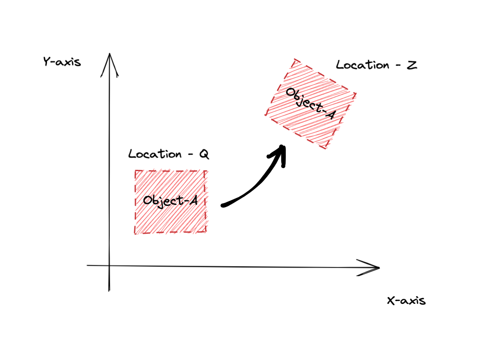
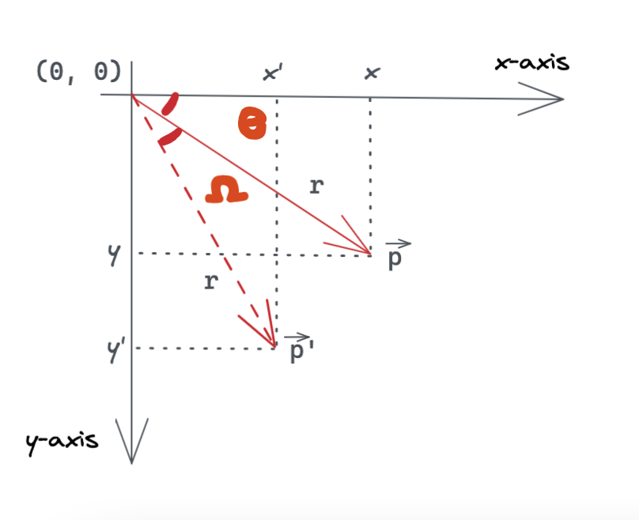
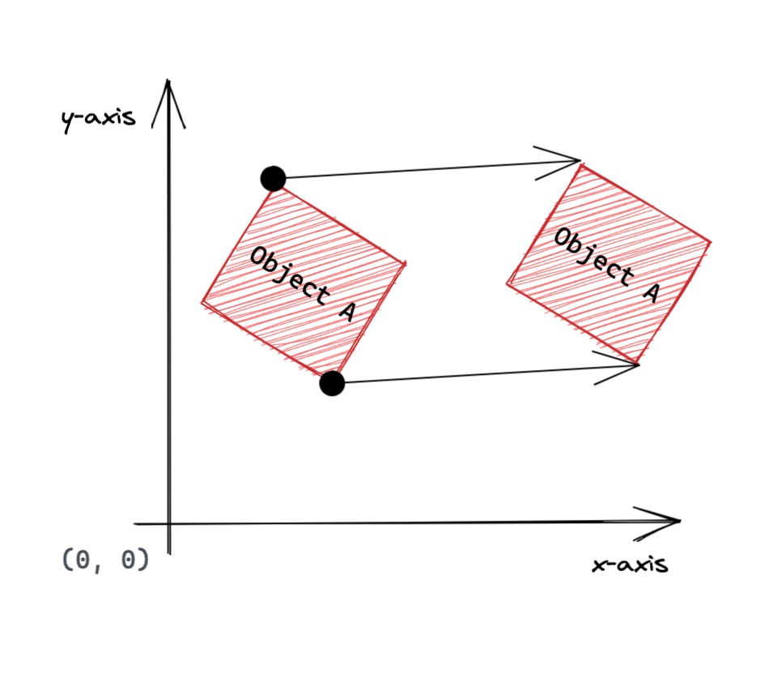
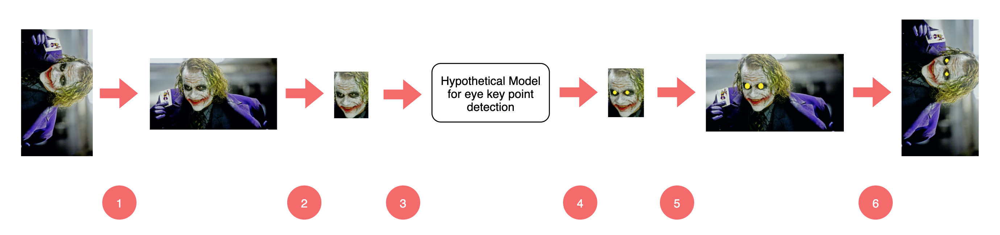

Aenean ornare velit lacus, ac varius enim lorem ullamcorper dolore aliquam.
Rigid body transformation are transformations that can change the figures location and orientation without changing size or shape. In other words, it's a geometeric transformation of a Euclidean space that preserves the Euclidean distance between every pair of points.
The rigid body transformations are reflection, rotation and translation. Basically, any proper rigid transformation can be decomposed as a rotation followed by a translation. An example is shown below,

Object A is initally at location Q in space and after some time it's at location Z in space. This transformation of the object-A from location Q to location Z is a rigid body transformation as the object's shape or size isn't changed after the transformation. Furthermore, this transformation can be represeted using rotation and then translation. So next, let's see what rotation and translation is.
Let's use the figure below to derive the rotational matrix.

Let's say a vector \large \vec{p} of length \large r is represented by a pair of points \large (x, y) and \large (0, 0) such that it's tail is fixed at \large (0, 0), the origin and it's head at \large (x, y). Furthermore, the vector is also making an \large \angle \theta with the x-axis. Then the vector \large \vec{p} can be represented in polar coordinates as,
From here on things get intresting, now we want to rotate \large \vec{p} with an angle \large \angle \Omega to get a new vector \large {\vec{p}\, '} such that it's tail is fixed at origin i.e. \large (0, 0). After rotation, the new vector \large {\vec{p}\, '} will have it's head at \large (x', y') and has the tail is fixed the length of the vector \large {\vec{p}\, '} will also be \large r. Furthermore, the vector\large {\vec{p}\, '} makes an angle of \large \angle \theta + \angle \Omega with x-axis. Thus giving it's polar representation as,
Now, let's say we don't know the value of \large \angle \theta but we know the coordinates \large (x, y) i.e. location of \large \vec{p}
in space and \large \angle \Omega the angle by which \large \vec{p} should be rotated. So, the equation (2) can now be rewriten using simple trignometery identities
in terms of \large (x, y) and \large \vec{p} to obtain \large {\vec{p}\, '}.
Using the trignometery identities,
\large \cos(A + B) = \cos(A)\cos(B) - \sin(A)\sin(B)
\large \sin(A + B) = \sin(A)\cos(B) + \cos(A)\sin(B)
Equation (2) can be rewritten as,
simple rearrangement,
From equation (1) we know,
Thus giving us the following equation,
The above equation can be expressed using matrix multiplication as,
In the above equation the matrix \large \begin{bmatrix} \cos(\Omega) & \hspace{0.1cm}-\sin(\Omega)\\ \sin(\Omega) & \hspace{0.6cm}\cos(\Omega) \end{bmatrix} is the rotational matrix and the general notation for representing it is\large \mathbb{R}. Thus, knowing the angle \large \angle \Omega and the \large \vec{p} vector we can obtain \large {\vec{p}\, }'. Finally, the equation can be rewritten as,
In translation every point moves the same distance in space given in any direction when the space is Euclidean space i.e. any translation is isometry. Isometry stands for distance preserving transformation between metric-spaces.

Translation of a coordinate \large (x, y) in Eucledian space can be represnted algebrically as,
The vector representation for the same is just vector addition,
Here, we look into the order of transformation i.e. is rotation then translation same as translation then rotation? Why should we worry about the order of the transformations? To put it simply, the commutative rules doesn't satisfy if we change the order of the transformation. Let's say translation and rotation are the expressions below,
Let's compare the order by first performing rotation then translation and equate it to translation then rotation using the above expressions,
From the above equation it is clear that \large RT \neq TR, therefore it is NOT commutative.
Let's try to apply the concepts we read above in solving
a problem which you can extend with some variation in you applications.
Assume we have a usecase where we need to find key point of the eyes given in an
image guaranteed with one face were eyes are clearly visible. The catch is that the image we are given is rotated 90 degree clockwise and the hypothetical
model we have for key point detection works only on tightly cropped face (no hair, background etc) and the face
should be upright (no other orrientation is accepted). Hmmm, seems a bit easy, let's spice it up even further. The face detction model also accepts
upright faces only. The pipeline we will follow to solve the problem is given below,

Let's break down the above steps mentioned in the pipeline above into sections has shown in the table below,
| Steps | Description |
|---|---|
| 1. | Make the Image Upright |
| 2. | Detect a Face |
| 3. | Crop the Detected Face |
| 4. | Generate Key Points For the Eyes |
| 5. | Translate the detected key point with respect to the original image. |
| 6. | Rotate the Image back to Original Orientation along with the key points. |
As we know the input image is rotated 90o degree clockwise but the hypothetical models we have only accept upright images for giving us valid inference,
hence we rotate the image 90o degree counter clockwise. To do this, we will use OpenCV's cv2.getRotationMatrix2D and cv2.warpAffine
methods. NOTE: The rotational matrx used in cv2.getRotationMatrix2D is for arbitrary center of rotation in our case the image center. You can find the
derivation for it here. However, the basic idea remains the same.
Now, let's try to rotate the image 90 degree clockwise. To do this we use the code snipet below.
In the above code snipet the method receives the following parameters rotate(image, 90.0, 1.0). The rotational matrix defined in cv2.getRotationMatrix2D is
a counter clockwise rotational matrix. Hence, the sign is +ve for angle 90o in the method rotate indicates to rotate the image counter clockwise. line 11
generates the rotational matrix with it's center as the image center. After generating the rotational matrix we performa an affine Transformation to get the rotated image in line 12.
The output is shown below,
So, what went wrong? Why are the shoulders cut? The reason being,
Aenean ornare velit lacus, ac varius enim lorem ullamcorper dolore aliquam.

Aenean ornare velit lacus, ac varius enim lorem ullamcorper dolore aliquam.

Aenean ornare velit lacus, ac varius enim lorem ullamcorper dolore aliquam.
Sed varius enim lorem ullamcorper dolore aliquam aenean ornare velit lacus, ac varius enim lorem ullamcorper dolore. Proin sed aliquam facilisis ante interdum. Sed nulla amet lorem feugiat tempus aliquam.